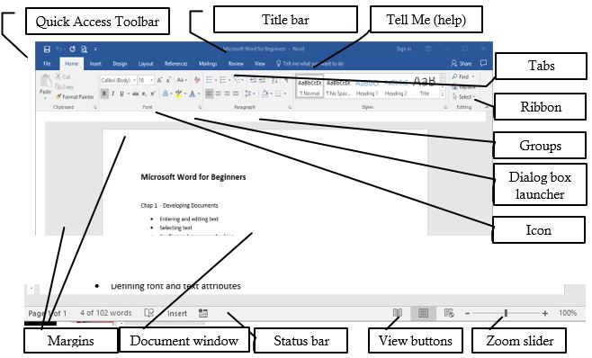
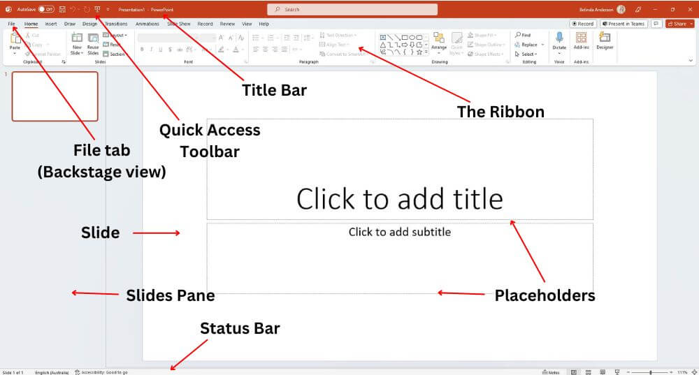
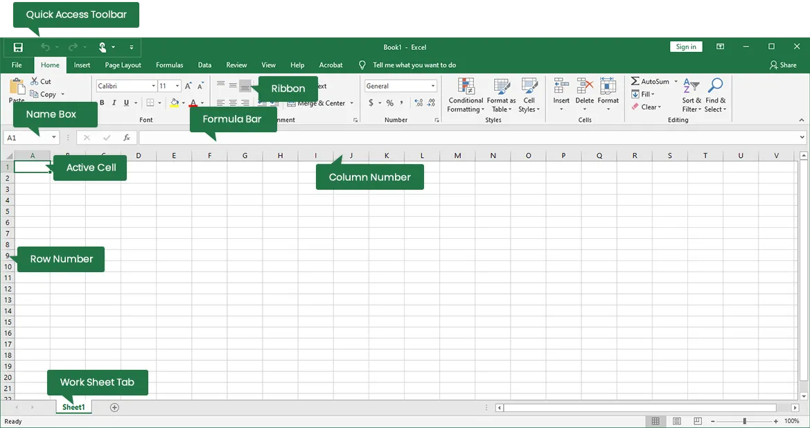

Application Package
MS-Word (Word Processor)
Introduction: MS-Word is a word processing software from Microsoft, used to create, edit, store, and print documents. It offers features for text editing, spell-checking, inserting graphics, and more. Documents are saved with a ".doc" or ".docx" extension.
Features:
Fast Operation: No mechanical movements, so it operates quickly.
Editing: Easy to insert, delete, modify text, and format (e.g., bold, italic, font style, color).
Permanent Storage: Documents can be saved electronically.
Graphics: Insert pictures, graphs, and charts.
OLE: Allows sharing of data between applications via embedded objects (e.g., charts, audio).
Mail Merge: Create multiple documents (e.g., letters, labels) using data from a list.
Searching: Search and replace words across documents.
Printing: Easily print documents.
Formatting: Enhance document appearance (e.g., paragraph alignment, bullet points, borders, watermarks).
Spelling & Grammar Checker: Detects and corrects errors.
Thesaurus: Find synonyms and antonyms with a few clicks.
MS-Excel (Spreadsheet)
Introduction: MS-Excel is spreadsheet software for organizing, analyzing, and calculating data. It is widely used for financial modeling, statistical analysis, and creating charts. Excel files have ".xls" or ".xlsx" extensions.
Features:
Multiple Worksheets: Work with multiple sheets at once.
Charts & Graphs: Create various visual representations of data.
Data Management: Organize and sort large volumes of data.
Calculations: Perform automatic calculations using formulas.
Formatting: Customize data with fonts, colors, etc.
Cell References: Use relative (e.g., A1) and absolute (e.g., $A$1) references in formulas.
Data Storage: Save data electronically.
Internet Features: Web toolbar and online linking support.
MS-PowerPoint (Presentation)
Introduction: MS-PowerPoint is a presentation software for creating dynamic, professional slideshows using text, images, charts, and multimedia. Files have ".ppt" or ".pptx" extensions.
Features: Formatting: Customize fonts, colors, and hyperlinks to enhance presentation.
Simple Operations: Support for cut, copy, paste, and find/replace.
Predefined Layouts & Templates: Create presentations quickly with themes and templates.
Slide Transitions & Effects: Add animations and slide transitions.
Custom Animations: Design unique animations for slides.
Hyperlinks: Include both internal and external links.
Charts & Graphs: Visualize data for effective communication.
Internet Features: Web toolbar and online support.